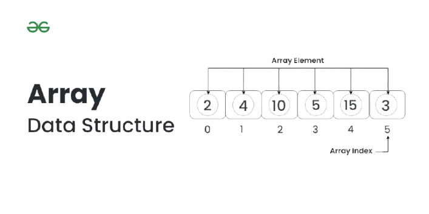
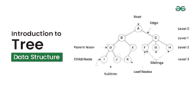

Introduction To C++
C++ is a programming language that is the foundation of many modern technologies like game engines, web browsers, operating systems financial systems, etc. Bjarne Stroustrup developed it as an extension of the C language. C++ is generally used to create high-performance applications and provides better control of memory and system resources. The latest version of C++ is C++ 23 which was released in 2023.
Feature of C++
- C++ is one of the most used and popular programming languages. C++ is used in making operating systems, embedded systems, and Graphical User Interfaces.
- It makes programming easy for programmers to switch to C++ because its syntax is similar to C, Java, and C#.
- C++ is faster than Python and Java.
- It is useful in limited resource environments where C is also an option. It is also used where we need speed of execution or we need to work close to hardware.
- When compared to C, C++ has richer libraries, supports object oriented programming, templates, exception handling and many more features.
Basic Syntax
#include < iostream >
using namespace std;
int main() {
cout << "Hello World!";
return 0;
}Appliacation of C++
- Software development: C++ is used to develop software infrastructure, desktop applications, video games, servers, and more.
- IoT devices: C++ is used in IoT devices.
- Web browsers: C++ is used in web browsers.
- Operating systems: C++ is used in operating systems.
Online C++ Compiler
Intoduction to Arrays
What is an Array
Array is a collection of items of the same variable type that are stored at contiguous memory locations. It is one of the most popular and simple data structures used in programming.
Characteristics of Array
- Data type: All elements in an array must be of the same data type.
- Size: The size of an array is fixed when it's declared and can't be changed later.
- Memory: Array elements are stored in contiguous memory locations.
Types of Arrays
- One-dimensional array: A linear array where elements are stored one after another in a row
- Two-dimensional array: A matrix where each cell contains elements, similar to a table
- Multi-dimensional array: A cuboid made up of smaller cuboids, where each cuboid can contain an element
Tutorials for Array
Introduction to Tree
Tree data structure is a hierarchical structure that is used to represent and organize data in the form of parent child relationship. The following are some real world situations which are naturally a tree.The topmost node of the tree is called the root, and the nodes below it are called the child nodes. Each node can have multiple child nodes, and these child nodes can also have their own child nodes, forming a recursive structure.
Characteristics of Tree
- The maximum number of nodes at any level ‘L’ in a binary tree is 2
- The minimum number of nodes in a binary tree of height H is H + 1
- The maximum number of nodes in a binary tree of height H is 2H+1 – 1
- The maximum number of nodes in a binary tree of height H is 2H+1 – 1
- The maximum number of nodes at each level of i is 2i.